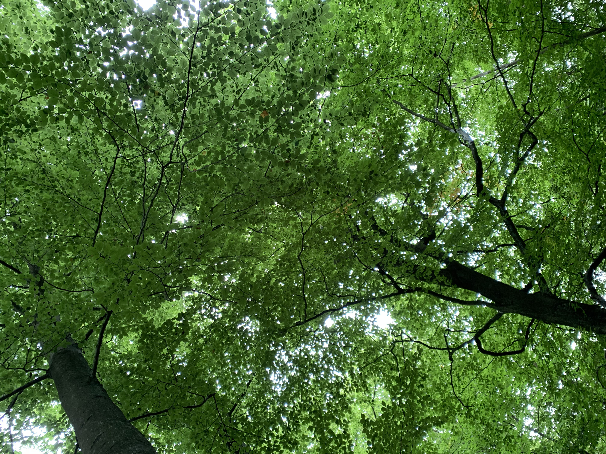

Hvem er jeg?
Jeanette Søs Gøttsche
Jeg er 28 år og studerer multimediedesign på Cphbusiness i Lyngby. Jeg er smilende, pligtopfyldende og hårdtarbejdende. Jeg er en selvdisciplineret person, som ofte lægger flere timer i arbejdet for, at kunnne blive bedre og opnå de ønsket resultater.Jeg arbejder godt selvstændigt, men fungerer også godt i teams. Jeg vægter dynamikken og sammenholdet i et team højt. Derfor betyder en arbejdsplads med godt samvær rigtig meget for mig.
Jeg har en stor interesse for boligindretning og planter og herudover elsker jeg at tage billeder af naturen.
